Get to know us

Camera Gear EssentialsCamera Equipment’s
Choosing the right camera equipment is essential for elevating
your photography skills. On this page, we'll guide you through
selecting the best camera, lenses, and accessories tailored to
your needs and budget. Discover how the right gear can make a
significant difference in capturing Amsterdam's beauty. Canon 77D,
my daily Camera which all the following stunning pictures are
captuered.
Drone Equipment’s
DJI Panthom 4 Pro this machine is a beeeast!!! it not as my daily
capture device because of the Netherlands weather due to high wind
speed and most of the time its raining.